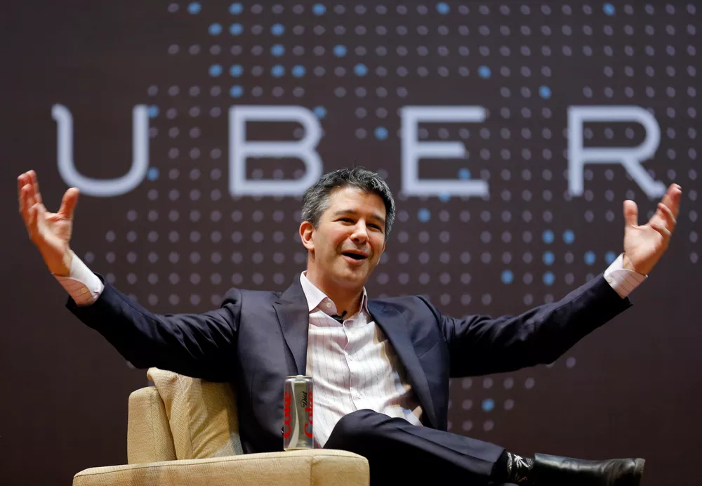

Por G1
02/02/2017 19h22 Atualizado há 6 anos
Clique para assistir ao video

O presidente do Uber,Travis Kalanick, deixará o conselho econômico criado pelo presidente americano Donald Trump, de acordo com informações do jornal The New York Times. A presença de Kalanick no grupo foi alvo de críticas da comunidade empresarial do Vale do Silício. As empresas de tecnologia são contra a política de restrição a imigrantes adotada por Trump e dizem que elas afetarão os seus trabalhadores e o ambiente empreendedor.
O The New York Times atribui a informação a uma carta enviada por Kalanick aos seus funcionários a qual o jornal teve avesso.
"Hoje mais cedo eu falei rapidamente com o presidente sobre a ordem de imigração e suas consequências para a nossa comunidade. (...) Eu também disse a ele que eu não seria capaz de participar do seu conselho econômico. Pertencer ao grupo não significa que eu endosso o presidente ou a sua agenda, mas infelizmente isso foi mal interpretado", diz a carta, segundo o jornal americano.
Além Kalanick, o conselho de Trump é formado por nomes importantes do ramo de negócios dos EUA. Entre eles estão os presidentes da General Motors, Mary Barra, do banco JPMorgan, Jamie Dimon, e do Walmart, CEO Doug McMillon.